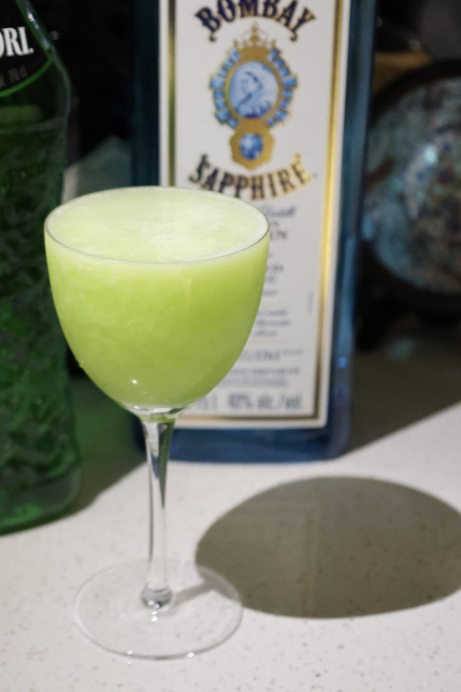
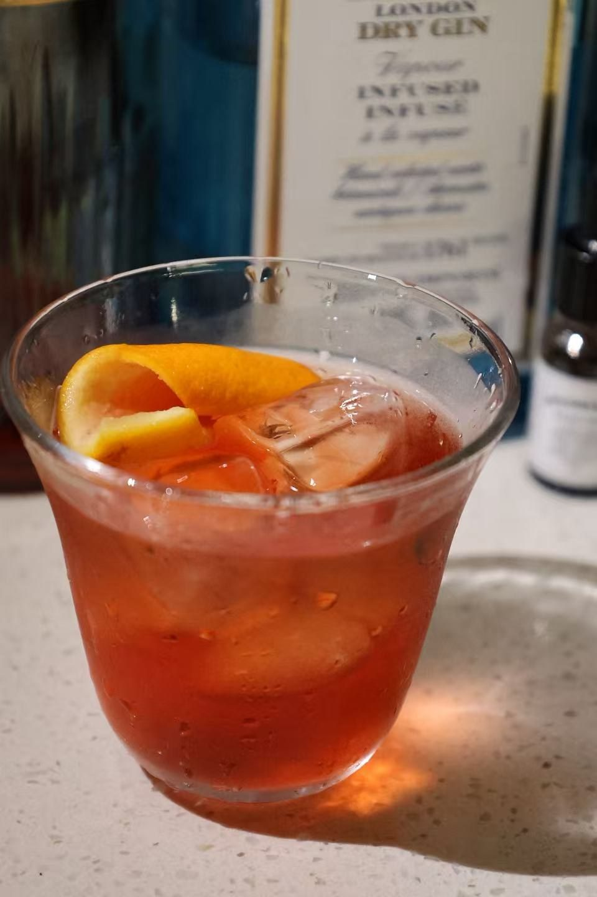

作词 : 黄伟文
作曲 : 雷颂德
编曲 : 雷颂德
编曲：雷颂德
当我在蒙马特 看遍满街的马戏
无端却渐觉 太自由 再也变不出惊喜
避了你至少 几千百公里
原来为了让你不愿再度被提起
遇不到他 怎够狠 放得开你
愿我那尾站在马德里
伤心就旅行 盼会遇上安份
在地球尽处 共我拥吻
最怕世上游遍 发觉没有此人
冰岛也没有 避世的小镇
一生在旅行 买票预了双份
站站停下 最后也空等
毕竟也自由过 算有幸 有不幸
当作四处消遣散心 预备六十六岁初吻
巴格达莫斯科 发觉我一早去过
如果放病假 会复元 假已放得这么多
大概也够钟想想到底我
沿途扮够任性 需要坐定下来么
负伤出走 荒野中露宿的我
下个圣诞夜 又要怎过
伤心就旅行 盼会遇上安份
在地球尽处 共我拥吻
最怕世上游遍 发觉没有此人
冰岛也没有 避世的小镇
一生在旅行 买票预了双份
站站停下 最后也空等
毕竟也自由过 算有幸 有不幸
当作四出消遣散心 预备六十六岁初吻
要是我抱着那 漂泊的心
路途上任谁 亦觉不合衬
难道我走上露台赏灯
未察觉 原来楼下有人
伤心就旅行 盼会遇上安份
在地球尽处 共我拥吻
最怕世上游遍 发觉没有此人
亲手破灭最后那 天真
一生在旅行 买票预了双份
站站停下 最后也空等
今天决定回去 痛快地坐一阵
最爱纵使真的要等
静静坐着亦会走近
监制：雷颂德

作词 : 林夕
作曲 : 王双骏
作曲：王双骏
作词：林夕
编曲/监制：王双骏
当美军要开战时
听你报许多次
你的嘴角有恨意
或者声线有含意
跑呀跑你使我留意
所有动荡大事
谁又无辜死于沙士
可以怎咬字
提及那七一
维园的足迹逐寸铺
明白你强忍的笑容
为现场骄傲
怀念殒落巨星
但愿未提到
仿佛你也想哭诉
这一生也未用过心
听新闻报导
这一刻先知我未来
能从新闻中看到
你要变成主播做得好
起码不枉费你辛劳
愿你跟我亦进步
听见的也都皱眉
大时代找真理
更必须振作士气
要当主播却别生气
转眼间已经到零四
三百日回味
我跟你都见证大事
沦为好知己
杨利伟到港
维港的骚却像泡汤
然后有几多真相又
像调查所讲
其实你若下班
动静极狂放
滚石你有否观看
这一生也未用过心
听新闻报导
这刻先关心你仕途
我却衷心的看好
你快变成主播做得好
起码都知道有公道
能发奋便回报高
终于分手了
报导并没有讲
只讲到有没有阳光
谁是世上蝼蚁
亦留恋这地方
你我都紧守岗位
那怕没人在看
一点钟我独坐客厅
等新闻报导
这晚也正是我生日
但求天天天气好
你已变成主播做得好
可以欣赏到你风度
但你切勿麻木
想看到你的笑容
我是你的观众